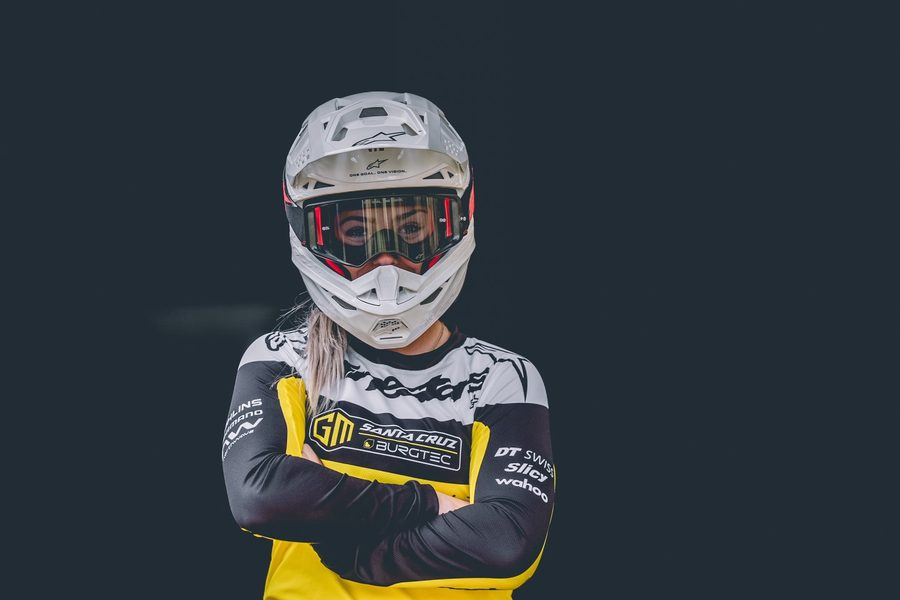

Lisa Bouladou
- 2x Championne de France (2024)
- Junior WC Win Leogang 2024
Lisa Bouladou is a France downhill rider competing for Santa Cruz / Burgtec by Goodman. RidersFanatics currently tracks 7 equipment items for this 2026 race setup, including Santa Cruz V10, Fox 40 Factory, Fox DHX2 Factory. The season record below contains 4 tracked results and 295 cumulative points.


01 / 02
Cockpit

Handlebar
Burgtec Ride Wide DH
02 / 02
Drivetrain


Season 2026
Results
| Year | Event | Result | Points |
|---|---|---|---|
| 2026 | Mona Yongpyong, South Korea (May) | 11th | 50 |
| 2026 | Loudenvielle, France (May) | 7th | 80 |
| 2026 | Leogang, Austria (June) | 5th | 110 |
| 2026 | La Thuile, Italy (July) | 10th | 55 |